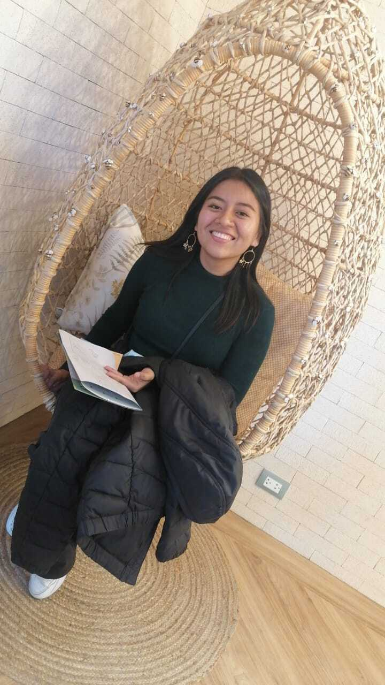
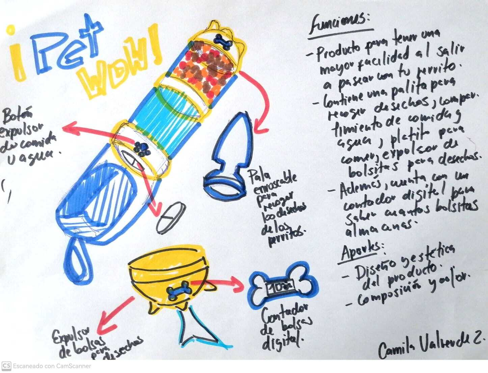

<!DOCTYPE html>
<html lang="es"></html>
<head>
    <title>paginaweb.camila</title>
    <meta charset="UTF-8">
    <style>
        *{
            margin: 0;
            padding:0;
        }
    section >div {position:relative;
        width: 100vw;
        display:flex;
        flex-direction:row;
        align-items: center;
        justify-content: center;
        }
        section > div > div{
    display: flex;
    flex-direction: row;
    align-items: center;
    justify-content: center;
    padding: 40px;
}
        #img1{
width: 400px;
height:600px;
}
#img2{
width: 700px;
height:400px;
}
#img3{
width: 700px;
height:400px;
}
#img4{
width: 700px;
height:400px;
}
#sec1{
    background: rgb(239, 216, 237);
    text-align: justify;
}
#sec2{
    background: rgb(215, 248, 212);
    text-align: justify;
}
#sec3{
    background: rgb(246, 223, 192);
    text-align: justify;
}
#sec4{
    background: rgb(180, 185, 235);
    text-align: justify;
}
/* Cambiar el estilo de letra
para los encabezados h1 y h2
*/
h1, h2 {font-family: "Verdana" , sans-serif;
/* Reemplaza "Verdana" con el nombre de la fuente que deseas utilizar */}
    
/* Cambiar el estilo de letra
para los párrafos */
p{font-family: "Georgia" , sans-serif;
/* Reemplaza "Georgia" con el nombre de la fuente que deseas utilizar */}
body {
    background-color: rgb(255, 243, 235); 
    /* Reemplaza "lightblue" con el color que deseas */}
</style>
</head>
<body>
    <header>
        <h1 style="font-family:'cursive' , sans-serif; ">¡Hola, soy Camila! &#x1F438;&#X1F338;</h1>
    </header>    
    <br>
    <section>
        <h2 style="font-family:'cursive' , sans-serif; ">Acerca de mi &#x1F60A;</h2>
        <div id="sec1">
        
            <div><p>Hola, mi nombre es Camila pero mis amigos me dicen "Cami o Camu". Actualmente me encuentro estudiando la carrera de
            Arquitectura de Interiores. Me considero una persona muy amable, optimista, creativa y buena trabajando en equipo.
            Además, soy amante de las películas de terror y comedia, ya que desde muy pequeña me gustaba hacer una maratón de
            películas de todo tipo. Dato curioso tengo cinco perritos en casa, y diría que son la razón por la cual soy feliz
            al llegar a casa y saludarlos, son muy amorosos, juguetones y siempre me despiertan con alguna ocurrencia. Desde muy
            pequeña siempre tuve muchas mascotas, se podría decir que siempre he estado acompañada de un amigo de "cuatro
            patas".
        </p></div>
        </div>
    </section> 
    <br>
    <section>
        <h2 style="font-family:'cursive' , sans-serif; ">Misión 1 &#x1F4FC;</h2>
        <div id="sec2">
        
        <div><p>La dinámica 1 consistía en formar grupos de 4 entre distintas carreras, dibujar "algo" que nos identifique como
            grupo e imprimir con ayuda de la impresora 3D en clase nuestro producto. Para ello, decidimos dibujar el casete de la película
            "Guardianes de la Galaxia", ya que a muchos del equipo les gustaba la película y a otros el género musical. Al reproducir el
            casete se podía escuchar una de las canciones de mi rankimg de canciones favoritas llamada: "The Piña Colada Song -
            Rupert Holmes", recuerdo que esta canción la reconocí por primera vez cuando vi "Son como Niños" una de las películas de comedia
            que nunca me canso de ver, es chistoso porque suelo relacionar mucho mis canciones favoritas con las películas que veo.
        </p></div>
        </div>
    </section> 
    <br>
    <section>
        <h2 style="font-family:'cursive' , sans-serif; ">Misión 2 &#x1f331;</h2>
    <div id="sec3">
        
        <div><p>La dinámica 2 consistía en proponer una idea del ODS N°12: "Producción y consumo responsable", para lo cual
            propusimos como grupo la "Reutilización de colillas de cigarro", en base a que en el Perú existen muchos distritos,
           donde se tiene la costumbre de botar las colillas de cigarro en las calles y parques. Para ello, se dio como una de las
           soluciones diseñar un "Envase de botella PET", el cual funcione como punto de reciclaje, para la obtención de productos
           fabricados en base a las colillas de cigarro como: macetas, papel, ropa, entre otros.
        </p></div>
    </div>
    </section> 
    <br>
    <section>
        <h2 style="font-family:'cursive' , sans-serif; ">Misión 3 &#x1F436;&#x2764;&#xFE0F;</h2>
    <div id="sec4">
        
        <div><p>La dinámica 3 consistía en dibujar una idea innovadora que vaya de la mano con lo tecnológico. Para lo cual, 
            decidí proponer un diseño para mascotas que incluyera diferentes funciones a la vez y que sea práctico y fácil 
            de trasladar. A este diseño lo llame "PET-WOW", el cual tenía la opción de llevar en pequeñas cantidades
            la comida y agua de nuestras mascotitas. Asimismo, incluía dos funciones más que era el poder tener un porta bolsitas
            que contara con un contador digital, el cual nos permitiría saber la cantidad de bolsas disponibles; además, 
            de una palita que sirva para recoger los desechos de nuestras mascotas sin tener contacto alguno.
        </p></div></div>
    </section> 
    <br>
        <aside>camu2198@gmail.com
        </aside>
        <footer>&copy; Camila Valverde Z. - 2023 
        </footer>
</body>
</html>


    


